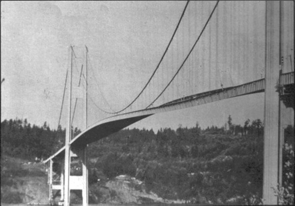
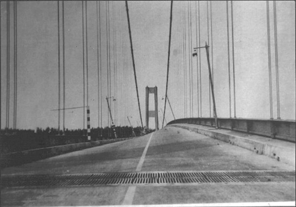
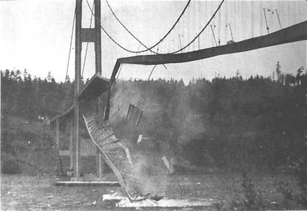

În vara anului 1940, s−a inaugurat un pod maiestuos peste strâmtoarea Tacomei (Tacoma Narrows, 50 km la sud de Seattle, Statele Unite ale Americii). Cei care îl traversau au constatat însă că podul se legăna puternic, chiar sub bătaia vântului. I−au spus "Bertie−săltăreaţa".
La doar patru luni de la inaugurare, sub un vânt nu foarte puternic (având viteza de aproximativ 70 km/h, deşi podul fusese proiectat să reziste până la 190 km/h), podul a început să oscileze foarte puternic (figura 1B−1).

Fig. 1B-1. Oscilaţiile podului de peste Tacoma, datorate unui vânt nu foarte puternic.
Cei care se aflau pe pod au trebuit să−şi abandoneze maşinile şi să se târască spre capetele podului. Amplitudinea oscilaţiilor a atins 4 metri! (figura 1B−2).

Fig. 1B-2. Oscilaţiile tablierului (punţii) podului.
Câteva ore mai târziu, podul a cedat şi o mare parte s−a prăbuşit în apele Tacomei (figura 1B−3).

Fig. 1B-3. Oscilaţiile tablierului (punţii) podului.
Nu s−au înregistrat victime omeneşti, însă uimirea a fost generală: cum a fost posibil ca un vânt nu foarte puternic să distrugă o structură capabilă să reziste la vânt mult mai intens?
Cei care proiectează construcţiile au învăţat o lecţie amară: oscilaţiile structurilor pot deveni distructive în anumite condiţii speciale. Aceste condiţii trebuie să fie depistate din vreme, chiar din faza de proiectare. De atunci, nici unul dintre sutele de podduri mari care s−au mai constuit nu s−a prăbuşit din cauza oscilaţiilor distructive.
Ce au aflat oare cei care proiectau construcţiile despre modul cum pot oscila acestea? Paginile următoare îţi vor oferi o incursiune în spectaculosul domeniu al oscilaţiilor care pot fi surprinzător de ample în anumite condiţii speciale.